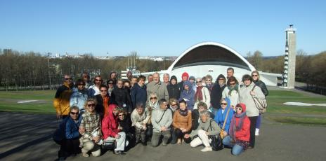
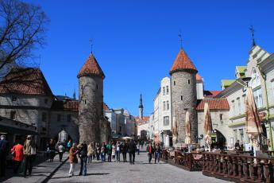
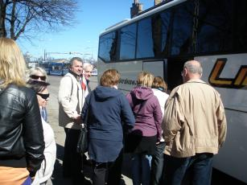
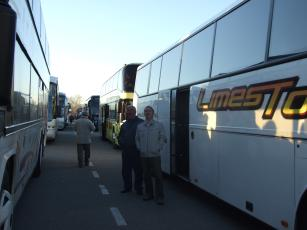
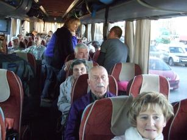
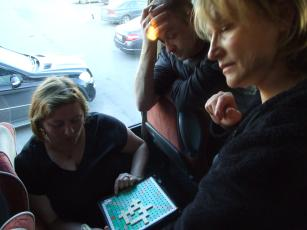
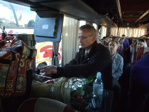
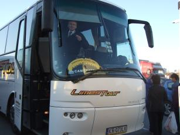
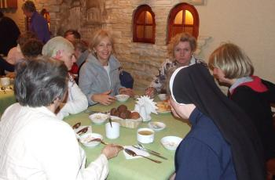

A tymczasem w Cameracie...
.
2012-05-01
Tallinn zaczynamy zwiedzać od wielkiej muszli koncertowej.
I dalej do centrum. Zwiedzamy z zapartym tchem. Tallinn jest piękny.

Szkoda, że tak mało czasu na zwiedzanie, ale czas w drogę, bo przyjechaliśmy przede wszystkim śpiewać a zwiedzamy przy okazji. Wsiadamy do Autokaru i w drogę. Tym razem na granicę z Rosją. Jedziemy do Sankt Petersburga.

No i w drogę. dojechaliśmy do granicy a tu niespodzianka, postawili nas na parkingu i stoimy . . .
 
Stoimy 1-ą godzinę, 2-gą . . . 4-ą, 5-ą w autobusie najpierw bunt, potem piknik

Panowie kierowcy robią kawę, herbatę, włączyli film na wideo, potem spacer wokół autokaru i . . .
 
jest nagle światełko w tunelu. Minęło 6 godzin i jedziemy na granicę, ale nie cieszmy się za wcześnie, bo tu kolejne 3 godziny. Jest wreszcie pozwolenie na wyjazd, więc ruszamy, gdzie ? na obiadokolację do Iwangorodu. Mimo, że jest 1 w nocy oni czekają z gorącym posiłkiem.

Wszyscy zjedli, zapakowali się do autokaru i dalej w drogę. Jedziemy na nocleg do OO Salezjanów w S. Petersburgu. Większość śpi. Przyjeżdżamy nad ranem. Szybko do pokoi i spać.

© Stowarzyszenie Muzyczne Chór Camerata Wieliczka